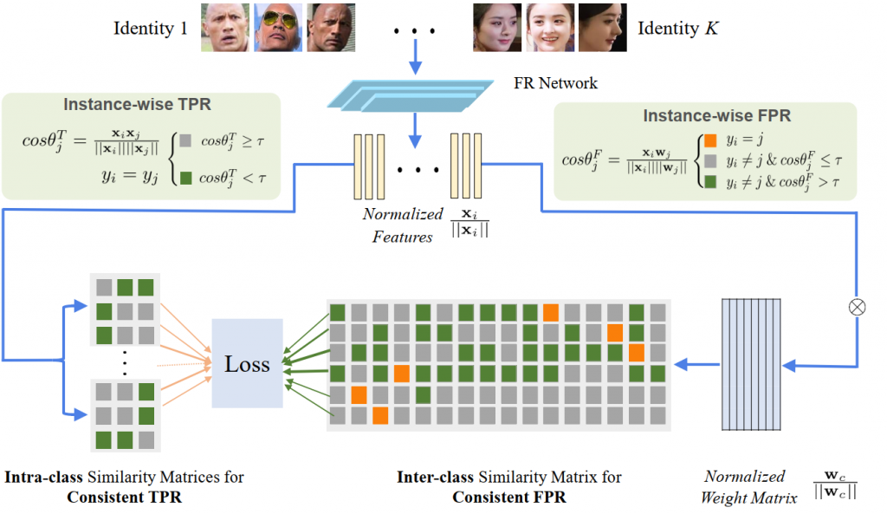
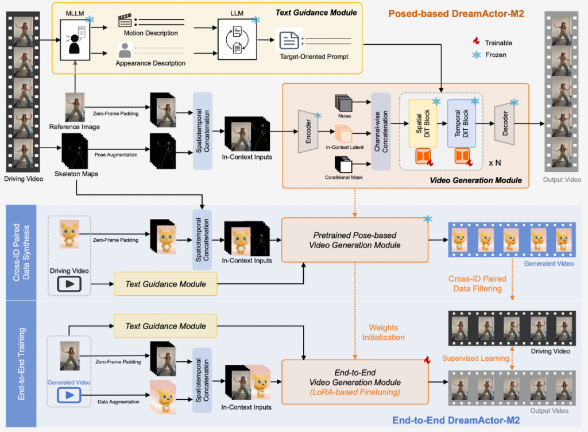
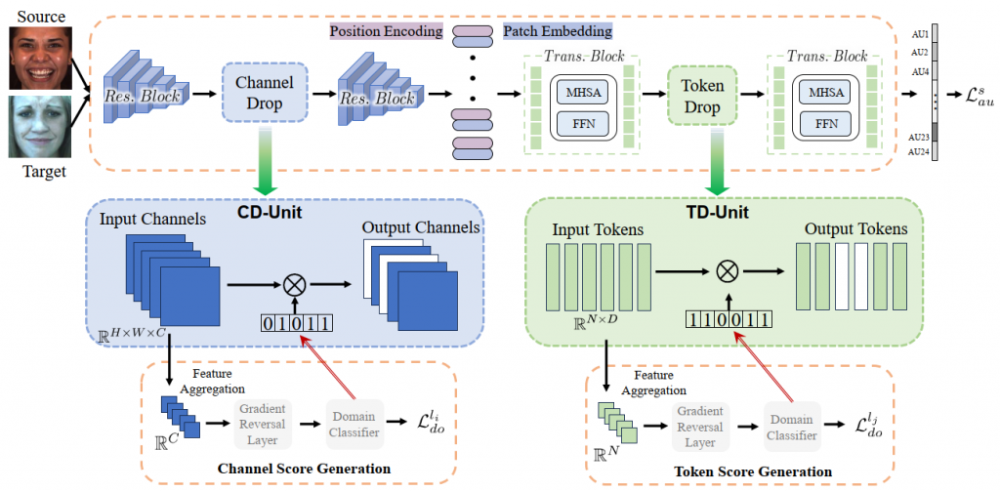
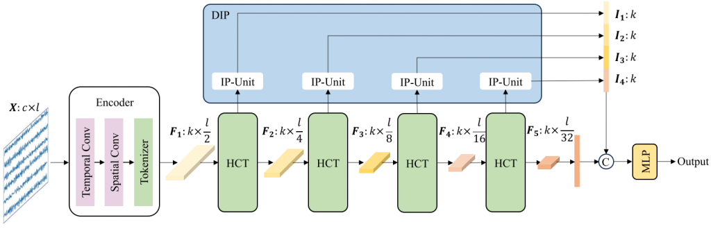
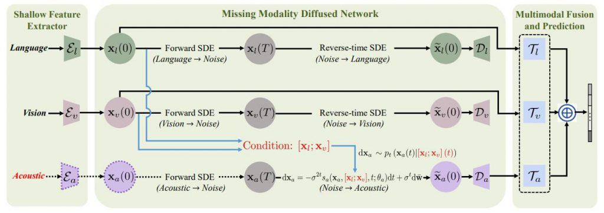
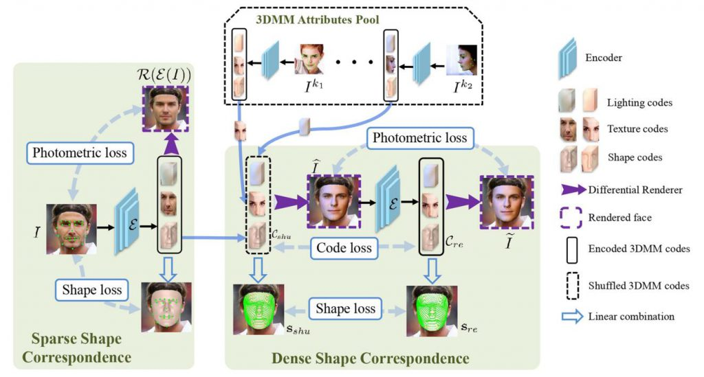
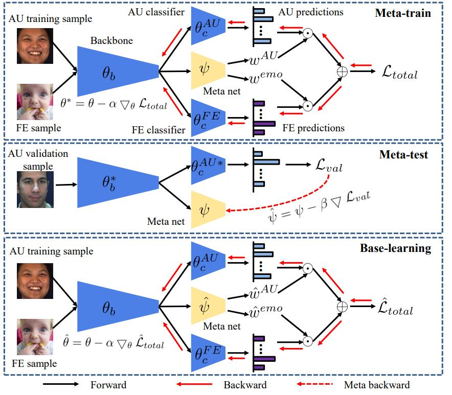
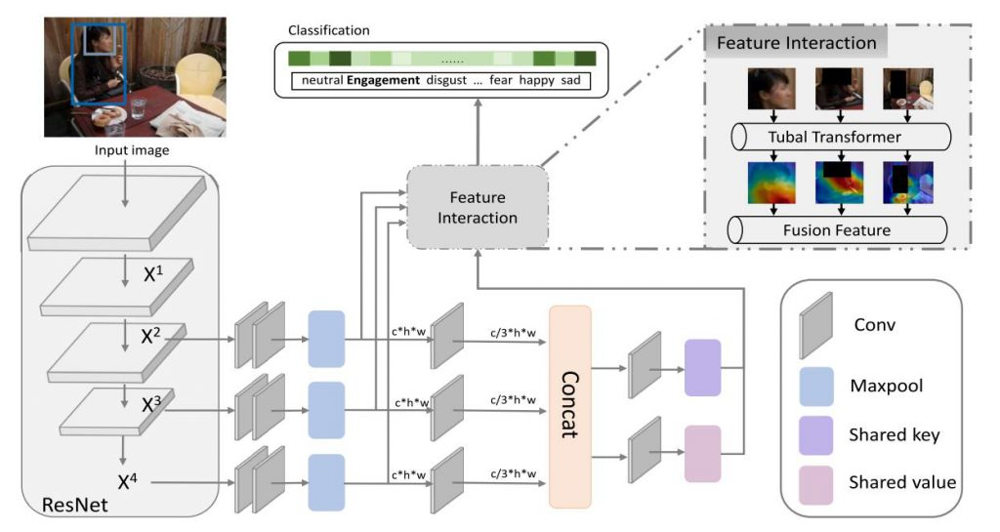

Affective Intelligence & Multimodal Group
论著

Decoupled Hierarchical Distillation for Multimodal Emotion Recognition
Yong Li, Yuanzhi Wang, Yi Ding, Shiqing Zhang, Ke Lu, Cuntai Guan
IEEE Transactions on Pattern Analysis and Machine Intelligence(TPAMI), (2026).

Instance-Consistent Fair Face Recognition
Yong Li, Yufei Sun, Zhen Cui, Pengcheng Shen, Shiguang Shan
IEEE Transactions on Pattern Analysis and Machine Intelligence(TPAMI), (2025).

Learning Representations for Facial Actions from Unlabeled Videos
Yong Li, Jiabei Zeng, Shiguang Shan
IEEE Transactions on Pattern Analysis and Machine Intelligence (TPAMI), (2022).

DreamActor-M2: Universal Character Image Animation via Spatiotemporal In-Context Learning
Mingshuang Luo, Shuang Liang, Zhengkun Rong, Yuxuan Luo, Tianshu Hu, Ruibing Hou, Hong Chang, Yong Li, Yuan Zhang, Mingyuan Gao
arXiv preprint arXiv:2601.21716, (2026), 数字人生成论文, 与字节跳动合作

Decoupled Doubly Contrastive Learning for Cross Domain Facial Action Unit Detection
Yong Li, Menglin Liu, Zhen Cui, Yi Ding, Yuan Zong, Wenming Zheng, Shiguang Shan, Cuntai Guan
IEEE Transactions on Image Processing (TIP), (2025).

Beyond Overfitting: Doubly Adaptive Dropout for Generalizable AU Detection
Yong Li, Yi Ren, Xuesong Niu, Yi Ding, Xiu-Shen Wei, Cuntai Guan
IEEE Transactions on Affective Computing (TAC), (2025).

Learning Attribute-Aware Hash Codes for Fine-Grained Image Retrieval via Query Optimization
Peng Wang, Yong Li, Lin Zhao, Xiu-Shen Wei
International Conference on Machine Learning (ICML), (2025).

EEG-Deformer: A Dense Convolutional Transformer for Brain-computer Interfaces
Yi Ding#, Yong Li#, Hao Sun, Rui Liu, Chengxuan Tong, Chenyu Liu, Xinliang Zhou, Cuntai Guan
IEEE Journal of Biomedical and Health Informatics (J-BHI), (2024).



Contrastive Learning of Person-independent Representations for Facial Action Unit Detection
Yong Li, Shiguang Shan
IEEE Transactions on Image Processing (TIP), (2023).


3D3M: 3D Modulated Morphable Model for Monocular Face Reconstruction
Yong Li, Qiang Hao, Jianguo Hu, Xinmiao Pan, Zechao Li, Zhen Cui
IEEE Transactions on Multimedia (TMM), (2022).

Meta Auxiliary Learning for Facial Action Unit Detection
Yong Li, Shiguang Shan
IEEE Transactions on Affective Computing (TAC), (2021).



Context-dependent emotion recognition
Zili Wang, Lingjie Lao, Xiaoya Zhang, Yong Li*, Tong Zhang, Zhen Cui
(Best poster in ChinaMM (2022)).